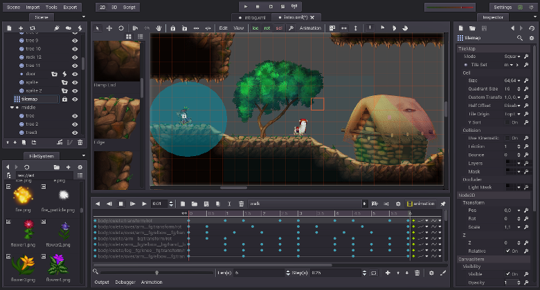
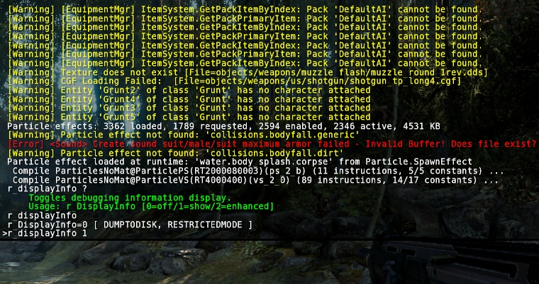
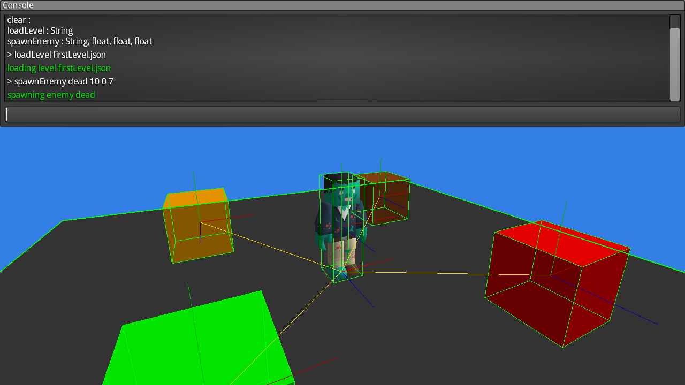

Dec 19, 2016 · 2 minute read · Comments
Games development

Godot Engine caught my eye a while back as a serious
open source alternative to the ubiquitous Unity. Some of you may know I’ve been
involved with the Libgdx project for some time, I even wrote a
book about it!
There’s nothing wrong with Libgdx, I absolutely love the project and the
more than welcoming community around it.
The problem is that shipping a game is hard. Doing so whilst working a full
time job is harder. Adding a semi-decent social life to the mix makes it
a mighty quest. There’s no such thing as too much help when it comes to
such venture. Consequently, the tooling around a fully featured engine
is hardly beatable.
Personally, I felt slightly uncomfortable working with Unity because of
its proprietary nature. However, the fact that there was no competitive
open source alternative out there really annoyed me too.
That’s why Godot has a strong appeal.

Last week, they announced the Godot Community Jam,
which started on December 16th and will continue until January 31st.
It’s hosted on itch.io and people
will be using #godotjam
on Twitter.
Looks like a great opportunity to learn the engine to me.
There’s enough time to put something together, even for a total n00b
like me. Moreover, the theme *2 buttons" encourages simplicity and
the rules are pretty lose.
I have a very rough idea of what I want to do, so it’s time to get
to work.
Will report back!
Dec 4, 2016 · 3 minute read · Comments
General

At long last, I got around to do something I had been meaning to do for a very
long time. I migrated this Wordpress blog over to a statically generated site
powered by Hugo.
That’s 6 years or over 300 posts worth of content.
Why not stay with Wordpress?
First of all, I wanted to move away from Wordpress because it’s heavy and requires
quite a bit of setup: PHP, database, plugins and so on. Markdown based static site
generators have been around for a while and being able to keep everything in plain
text and under a familiar source control system such as Git is awesome.
I use git and Markdown all the time both at home and at work.
Why Hugo?
Hugo is an open source static site generator
written in Go. It’s cross-platform and ships as a dependency free binary. Comprehensive
documentation, wide range of
themes as well as active and helpful community
are great additions.
Whilst Jekyll was the more established solution, it
required Ruby and I really wanted to keep my environment as simple as possible.
Other alternatives lacked features, support, had a more complex setup or a combination
of the former.
We’ve got a winner!
Exporting Wordpress content
The process went on like this.
- Exported all posts and pages to XML with the standard Wordpress Export tool.
- Used Exitwp to convert content to Markdown.
- Lots of regex search and replace in Sublime.
Back in 2010 I used the WYSIWYG editor in Wordpress and later on I moved to use
the Markdown module in Jetpack. The mix
really confused Exitwp and required me to do a lot of manual editing and that took
quite a while.
Pushing to production
This excellent tutorial
proved most useful to get a streamlined publishing pipeline.
Essentially, this involved the following:
- Install Hugo on my production server
- Put the site sources in a local git repository
- Create a git bare repository in the production server
- Add a
post-receive hook on the production repository that runs hugo and builds the site.
Give the article a proper read if you want to know more. The publish hook also
uses rsync to back everything up in case something goes amiss.
To create a new post, test it locally and publish it, I simply do:
hugo new post/category/name.md
hugo serve --buildDrafts
git add content
git push prod
Results
So far I love it!
Here are some poor man’s stats on loading times for the homepage, mind
that I haven’t tried to optimized neither of the two.
- Wordpress: ~3.7s
- Hugo: ~2.1s
Please, let me know if you find anything broken, I would really appreciate it!
Sep 10, 2016 · 1 minute read · Comments
Games developmentProjects

There’s a new Ashley release, check the changes for 1.7.3 below:
- API addition: Adds ‘createComponent()" method to
Engine class. Commit 07fc2ba6bcd9996c472c651b56b57b32fd8fd3a7.
- API addition: Adds ‘createEntity()" method to
Engine class. Commit 45dd7e0e4a52c8d65f520fac4e8f4e83471b215b.
- API addition: Adds ‘addAndReturn()" method to
Entity class. Commit 423148a2719873efb50d4f2b3982c247df4fceca.
- Bug fix: Fixes systems going out of priority order after removal. Issue #237.
- Bug fix: Fixes returning pooled entity to the entity pool twice. Issue #221.
- Update: uses Travis for CI. Commit c4265eff694cfb34eaef1bdd929ee398c1ccfa64.
- Update: uses Libgdx 1.9.4.
To use it, change your dependency to com.badlogicgames.gdx:ashley:1.7.3. The new nightly dependency is com.badlogicgames.gdx:ashley:1.7.4-SNAPSHOT. Thanks for your continued support!
Feb 29, 2016 · 1 minute read · Comments
General
Small Ashley release, check the changes for 1.7.2 below:
- Bug fix:
Engine doesn’t use EntitySystem iterator().
- Bug fix: Fixes
Engine left unusable, in the updating state, after an uncaught exception in a subsystem.
- Bug fix: Fixes
FamilyManager not cleaning up properly when a triggering a listener that throws.
To use it, change your dependency to com.badlogicgames.gdx:ashley:1.7.2. The new nightly dependency is com.badlogicgames.gdx:ashley:1.7.3-SNAPSHOT.
Feb 20, 2016 · 2 minute read · Comments
Games development
A lot of games come with a built-in console that lets you enter commands, which is especially useful during development. Most times, it gets disabled before shipping although, occasionally, devs let you bring it up and enter cheat codes. CryEngine comes with a built-in console.

When you"re testing a new feature you just wrote, it can be incredibly useful to pause, reset the scene, teleport your character, become invincible, switch to a different level or even adjust some parameters in the AI. Some engines use a scripting language that can hot-reload new or modified scripts, but that may not always be feasible. Having a built-in console to enter these commands surely is pretty darn handy! It would be reasonably easy to write a custom console with Libgdx, you just need to leverage Scene2D and have some logic to support arbitrary commands and let the game code handle them. But why do that when you have libgdx-inGameConsole? No reason at all! It’s incredibly simple to set it up. First, add the following dependency to your build.gradle file and refresh your project’s dependencies. compile “com.strongjoshua:libgdx-inGameConsole:0.3.2” You can instantiate the Console inside your create() method. Use the setSizePercent() and setPositionPercent() methods to configure where your console will show up and how much of the screen it"ll take. Finally, you can also override the key to toggle the console.
private Console console;
@Override
public void create() {
...
console = new Console();
console.setSizePercent(100, 33);
console.setPositionPercent(0, 67);
console.setKeyID(Keys.Z);
}
Remember to call draw() inside your render() method.
console.draw();
Wonderful, we now have a working in-game console capable of doing absolutely nothing. We need to add our command processing logic. Let’s specialize the CommandExecutor class and add some methods to load a level and spawn baddies.
public class GameCommandExecutor extends Command {
private Console console;
public GameCommandExecutor(Console console) {
this.console = console;
}
public void loadLevel(String levelName) {
console.log("loading level " + levelName, Console.LogLevel.SUCCESS);
}
public void spawnEnemy(String type, float x, float y, float z) {
console.log("spawning enemy " + type, Console.LogLevel.SUCCESS);
}
public void clear() {
console.clear();
}
}
At some point, we need to register the executor with the console.
console.setCommandExecutor(new GameCommandExecutor(console));
Done, that’s it!

The console uses the Libgdx reflection module to figure out which commands your CommandExecutor supports, which means it’s fully compatible with the WebGL backend. It’s also possible to configure the look and feel of the console if you provide a Skin to its constructor. To know more, check its comprehensive documentation.